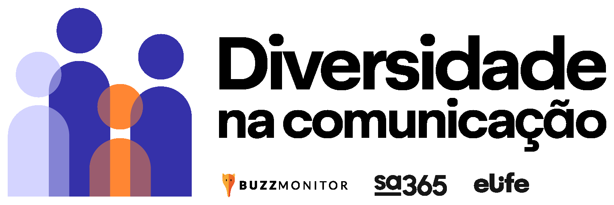
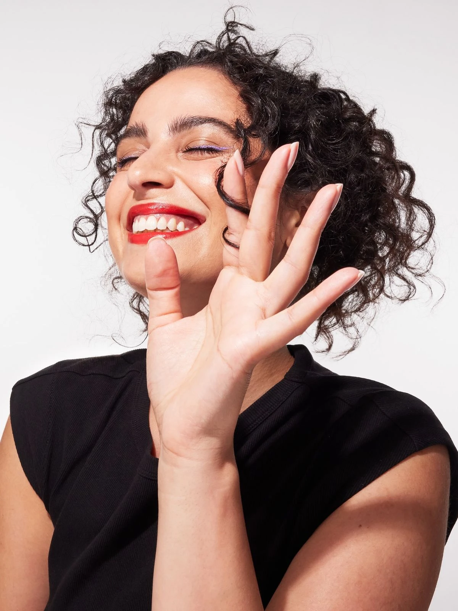

8º Estudo Diversidade na Comunicação de Marcas nas Redes Sociais
Baixe gratuitamente o estudo completo e descubra como os 20 maiores anunciantes do Brasil retratam a diversidade nas redes sociais.
Achado 01 Idosos aparecem em só 5,1% das publicações, o segundo pior resultado da nossa série histórica.
Faça parte da transformação
Baixe agora o estudo completo e contribua para a mudança que está moldando o futuro da comunicação no Brasil.
10.229 publicações analisadas · 20 maiores anunciantes do Brasil
Você se sente representado na publicidade?
A Buzzmonitor, em parceria com a SA365 e a Elife, analisou 10.229 publicações dos 20 maiores anunciantes do Brasil entre janeiro de 2025 e junho de 2026, para entender como mulheres, negros, idosos, PcDs, pessoas sexualmente diversas, povos indígenas, asiáticos e outros grupos estão sendo representados na publicidade digital.
O resultado foi um retrato potente (e às vezes desconfortável) sobre a evolução (e os retrocessos) da diversidade nas campanhas que impactam milhões de consumidores todos os dias.


O que os dados revelam
-
Idosos aparecem em só 5,1% das publicações, o segundo pior resultado da nossa série histórica.

-
Mulheres seguem maioria absoluta: 68,2% das publicações têm presença feminina, em alta há dois anos seguidos.

-
Presença negra recua para 32,5% das publicações, perto da marca histórica mais baixa.

-
Pessoas LGBTQIAPN+ aparecem em só 0,4% das peças, o pior índice desde o início do estudo.

-
PcDs (0,5%) e pessoas gordas (0,9%) seguem quase invisíveis, a pior marca já registrada para o segundo grupo.

-
Asiáticos seguem super-representados: 12,1% de presença no estudo contra 0,4% da população brasileira.

Prêmio Diversidade na Comunicação de Marcas nas Redes Sociais
As marcas que mais se destacaram em representatividade em anúncios foram premiadas no Buzz Summit 2026. Uma oportunidade única de celebrar quem está à frente na construção de narrativas inclusivas.
- Presença de Idosos
- Presença de PCDs
- Presença Negra
- Presença Feminina
- Presença de Pessoas Sexualmente Diversas
Por que este estudo importa?
Diversidade na comunicação não é só uma pauta social: publicações com grupos diversos têm engajamento médio de 3.455 interações por mil pessoas, contra 2.661 nas peças só com grupos hegemônicos (homens e pessoas brancas).
Essa pesquisa ajuda o mercado publicitário a reconhecer onde avançou, corrigir onde recuou e valorizar quem abre espaço para diferentes vozes.
Faça parte da transformação
Baixar o estudo